Chapter 7
Weak pawns
7.1 Introduction
In a chess game, the movements of the pieces are largely determined by the pawn structure. We can regard the pawn skeleton as the backbone of the position, on which everything else is hung. It is as if the pawns indicate on which files the rooks should be placed, where the pieces should go, and also where they have no business.
There is yet another important detail that we can read from the positions of the pawns, namely where the weaknesses are situated. A diagram may serve to clarify this.
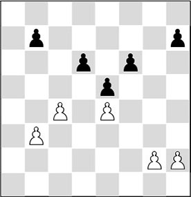
7.2 Definitions
Let us formulate these features into a practical concept:
Definition:
A backward pawn is a pawn standing on a half-open file, which cannot be protected by its pawn colleagues, and also has no pawn colleagues next to it. This makes the square in front of this pawn weak, and the opponent can take firm control of it.
Therefore, a backward pawn is a major source of concern, but there are also other kinds of pawns that we call weak. In the following diagram it is not hard to point out several weaknesses.
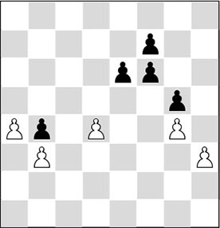
A) A protected passed pawn (a4) is in principle a strong pawn, and especially in pawn endings it is a lethal weapon.
B) An isolated pawn in the centre (d4) is principally weak, since it can easily be attacked by the opponent. However, in many positions it functions as a means of attack, since the pieces can be arranged behind it and the pawn controls important strong-points in the centre.
C) A pawn on a (half-)open file is in principle a target, since it cannot expect any support from its ‘little brothers’. Still, there is always the hope that it can be pushed forward and, as a result, free itself from its status (in the diagram position Black hopes to achieve the push …f6-f5, after which he will have solved the weakness on f6). The pawn on b4 is not on an open file, but nevertheless it can become a prey for the enemy minor pieces, since it is more or less fixed, and its immobility makes it a target.
D) The plight of the backward pawn (h3) is in principle the worst. It has no support; and pushing it forward is practically impossible, since the opponent controls the square in front of it.
From the above argument we can conclude that pawns on half-open files can be regarded as potential weaknesses. Between them, the backward pawn is most in need of support.
Let’s have a look at an example from practice.
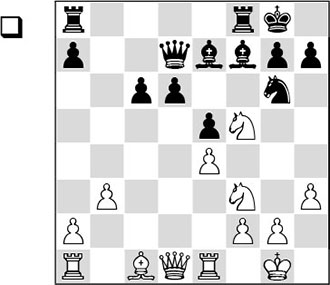
In the diagram position, the black pawns on c6 and d6 are on half-open files for White. At first sight, Black does not seem to be in bad shape. His pawns do not look weak yet, and in certain circumstances they could even be moved forward. Now it is up to White to make sure that this does not happen, and that the defending pieces are eliminated. This explains the following action:
1.♗g5!
A very strong move – much better than the obvious 1.♘xe7+. White has correctly seen that his knight is doing a good job on the outpost f5, accentuating the weakness of – especially – the d-pawn.
1…♖fd8 2.♖c1
2.♕c2 also deserved consideration.
2…♖ac8
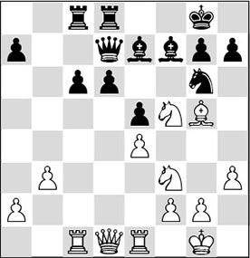
3.♖c3!
A multi-functional move. White is ready to prepare a doubling or even a tripling on either the d- or the c-file. Obviously White does not exchange on e7 himself, leaving it up to his opponent to do this. By the way, 3.♖e3 would also have achieved the same aim.
3…♗xg5
With the text move Black activates the white cavalry, but the alternative 3…h6?! was even worse. White would achieve a huge advantage with 4.♗xe7 ♘xe7 5.♖d3 ♘xf5 6.♘xe5.
4.♘xg5
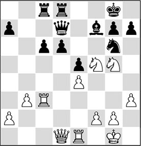
4…♘f4
Black realizes that he cannot survive by normal means. After 4…♘e7 5.♘xf7 ♔xf7 6.♘xe7 ♔xe7 his king is, as it were, drawn to the unsafe centre, after which White has various methods to obtain a huge advantage (the best possibility after 6…♕xe7 seems to be 7.♖xc6! ♖xc6 8.♕d5+, and White wins a crucial pawn): 7.♕h5 h6 8.♖g3 ♖g8 (after 8…♔f8 9.♖ee3!, the white initiative is killing) 9.♕h4+ ♔e8 and now both 10.♖d1 and 10.♖g6 are virtually winning.
Another possibility is 4…♗e8, but after 5.♕g4 d5 6.h4 d4 7.♖c5, the black formation has also become weak. The protected passed pawn on d4 does not balance this disadvantage, since White exerts enormous pressure on the kingside (and also on the e5-pawn).
5.g3 ♗h5
There was no longer anything reasonable to be found. After 5…♘e6 6.♘xf7 ♔xf7 7.♖d3, things would get out of hand for Black, as a pawn is lost: 7…d5 8.exd5 cxd5 9.♖xe5. Black turns out to succumb to the weakness of his centre pawns. After the text move, by the way, the game is over too.
6.♕d2 ♘e6 7.♘xe6 ♕xe6
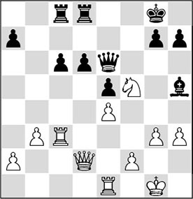
8.♕g5
And Black resigned in view of the triple threat of 9.♕xg7#, 9.♕xh5 and 9.♘e7+. It was striking how much trouble Black turned out to have with his pawns in this game. With a few well-aimed ‘shots’, White was able to ruin the black stronghold.
7.3 Manoeuvring against weak pawns
It is not usual for the weakness of one or more pawns to be exposed in just a few moves’ time. The player who possesses such an advantage often has to manoeuvre quite cautiously, and only in the distant future will he be able to reap the fruits of a well-conducted strategy.
It is known that a backward pawn on a half-open file first has to be carefully blocked before it can be targeted. The reason for this is simple: the superior side wants the weakness to be fixed as deeply as possible inside the opponent’s camp, so that the latter will also suffer from a dire lack of space. In the following fragment we see how gradually the winning process develops.
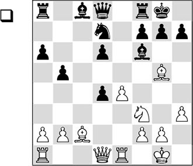
In this position, White has the superior pawn structure. The pawn on d4 will fall into his hands shortly, after which Black is saddled with the weakness of d6.
1.♗xf6 ♕xf6 2.♘xd4 ♘e5
To 2…♘c5, 3.♖c1 is presumably the best reply. White brings his last piece into the game and maintains the pressure on Black’s position.
To 2…♗b7, 3.♘f5 is a strong answer. White exchanges his b2-pawn for the d6-pawn with 3…♕xb2 4.♘xd6, which, after 4…♘c5 5.e5, leads to a very promising position. The white pieces are cooperating well, whereas any coordination between Black’s pieces is completely lacking. Also, the black king position is lying bare, and therefore an attack on the king wouldn’t be appearing out of thin air.
3.♗b3 ♗d7 4.♖c1
Looking at the further course of the game, we could ask ourselves whether the immediate 4.♕d2 should not have been preferred. After 4…♖ac8 5.♖ad1, White has an extra tempo compared to the game.
4…♖ac8 5.♕d2 ♘g6
In view of the comment to the previous move, 5…♖xc1 would have been more natural. After 6.♖xc1 ♖c8, 7.♖d1 is the customary continuation.
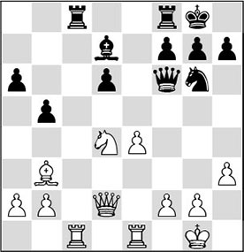
6.♖cd1!
An instructive move. To be able to put pressure on a weak pawn, White is helped by keeping the heavy pieces on the board. If we had only minor pieces on the board in this position, then White’s advantage would be virtually negligible.
6…♘e5?!
Black would have done better to activate his king’s rook with 6…♖fe8.
7.f4
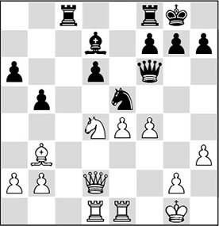
7…♘c4
A quite obvious move, but the question is whether the exchange of the white bishop for this knight is so advantageous for Black. However, the alternatives did not look very rosy either. After 7…♘c6?!, White would exchange one advantage for another with 8.♘xc6 ♗xc6 9.e5 dxe5 10.fxe5 ♕e7 11.e6 f6. Now he has eliminated Black’s weakness, but the white passed pawn is incredibly strong, and with 12.♕d7! he demonstrates that the position already contains a combination. A possible continuation is 12…♖fe8 13.♖c1!, and White wins a decisive amount of material.
It looks as if 7…♘g6 is still playable, but then White would obtain a large positional advantage with 8.♘e2!. He then threatens 9.e5, and on 8…♗c6 White would cash in a pawn with 9.f5! ♘e5 10.♕xd6 ♕xd6 11.♖xd6.
8.♗xc4 bxc4
This is no bed of roses for Black, as he is saddled with a new weakness. Moreover, his bishop has become bad.
After 8…♖xc4, Black would also have been in big trouble: 9.b3 ♖c7 10.♘f3 ♖c6 11.e5, and the weak pawn already falls into White’s hands. The tactical trick 11…♕g6 12.exd6 ♖c2 (12…♗xh3? 13.♘e5) is refuted by 13.♘h4! ♖xd2 14.♘xg6 ♖xd1 15.♘e7+ ♔h8 16.♖xd1, and White wins.
After the text move Black is left with a destroyed pawn structure.
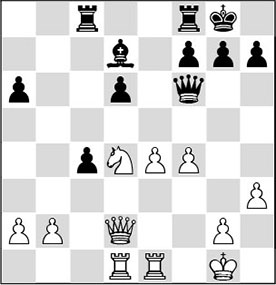
9.♘e2!
A clever move. White plays the knight to the beautiful square c3, where it will fix the pawn on c4 and control the square d5. Also, the d-file is opened, so the pressure on d6 can be increased.
9…♗a4
Keeping the damage within bounds.
10.♖c1 ♖fd8 11.♘c3 ♗c6 12.♖cd1 h6
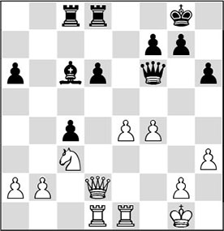
13.♕e3!
This move emphasizes that there is nothing left to do for Black. White can take his time to increase the pressure on the d6-pawn, and in the meantime he centralizes his queen, which can later keep an eye on the d6-pawn from g3.
By leaving the d-file with his queen, Spassky also makes a doubling of rooks on this file possible.
13…♖b8 14.♖e2 ♖bc8 15.♖d4 ♗b7 16.♖ed2 ♕e7 17.♕g3 ♔f8
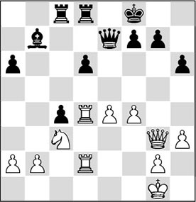
18.f5!
In a higher sense, this move decides the game. Although White marks his own pawn on e4 as a backward pawn, the attack on the weak d6-pawn can no longer be dealt with. Thus, 18…♖c6 is met by 19.e5, and now it becomes clear why the presence of the major pieces works in White’s favour. The pressure on the d-file will be Black’s undoing.
18…♖e8 19.♖xd6
The first harvest is gathered.
19…♕e5
Black seeks refuge in an endgame, hoping that he will be able to save a half point there. 19…♗xe4 20.f6! gxf6 21.♖e2 would also have been disastrous for him.
20.♕xe5 ♖xe5 21.♖2d4 a5 22.♖b6 ♗a8 23.♖a6 ♔e8 24.♔f2 ♔f8 25.♔e3 ♖ec5
Now that White has stabilized his central position, he can start a search for new advantages.
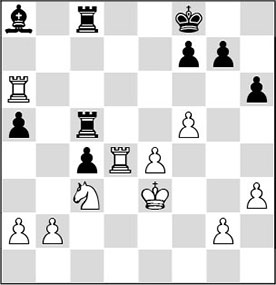
26.♖d7
Also not bad was 26.♘a4!, winning at least a second pawn: 26…♖5c6 (26…♖b5 27.♘b6) 27.♖xa5 or also 27.♖xc6.
26…♗c6 27.♖da7 a4
Black’s problems are piling up. Besides the fact that he is a pawn down, his queenside pawns must move to squares of the wrong colour, making the dark squares available to the white pieces.
28.♔d4 ♗e8 29.♖b6
It is remarkable that White is not interested in a four-rook endgame with two extra pawns after 29.♘xa4 ♗xa4 30.♖xa4; probably because Black could then develop a small trace of counterplay with 30…c3, even though objectively it does not promise him much.
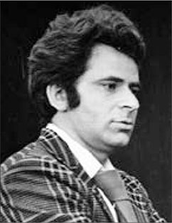
Boris Spassky
29…h5 30.g4 h4 31.♖bb7 ♖5c6 32.♘d5 ♖d8 33.g5 ♖cd6
Slowly the net around the black king is drawn tighter, and so Black decides to put a second pawn on offer.
34.♔xc4 ♖c6+ 35.♔d4 ♖c2 36.♔e5 ♖c4
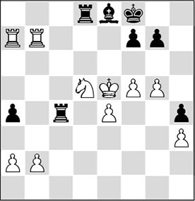
37.g6!
The decision. White forces an opening of the seventh rank, enabling his rooks to start a mating offensive.
37…f6+ 38.♘xf6!
Of course. The last remains of Black’s protective wall are mopped up.
38…gxf6+ 39.♔xf6 ♖c6+ 40.♔g5
Black resigns, since there is no remedy to the threat of 41.♖h7 ♔g8 42.♖ag7+ ♔f8 43.♔h6!, and the mate threat 44.♖h8 cannot be averted.
In the following game we see another model achievement by former World Champion Boris Spassky, in which he takes aim at a weak pawn on d6.
RL 9.10 (C73)
1.e4 e5 2.♘f3 ♘c6 3.♗b5 a6 4.♗a4 d6 5.♗xc6+ bxc6 6.d4 f6
In the 19th game of the controversial PCA World Championship match between Kasparov and Short in 1993, Black opted for 6…exd4.
7.♗e3 ♘e7 8.♘c3 ♘g6 9.♕e2 ♗e6 10.0-0-0 ♕b8 11.♔b1 ♕b7 12.♗c1 ♗e7 13.g3 ♖b8 14.b3 ♗f7 15.h4 ♘f8 16.h5 ♘e6 17.d5 ♘c5 18.♗a3 ♕b6 19.♘d2 cxd5 20.exd5 ♕a5 21.♗b2
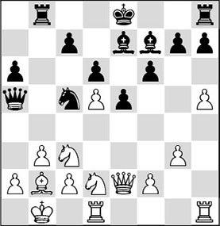
21…c6?
Just what White was waiting for. In an attempt to bring his bishop pair to life, Black opens up the position. He does not realize that from now on he will be stuck with a weak pawn on an open file, while White obtains control of the strong d5-square as well (see also Chapter 9).
22.♘c4 ♕c7 23.♕g4
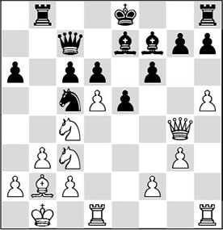
23…cxd5?
This exchange will result in strategic bankruptcy. It compels Black to give up his good bishop, saddling him with weakened light squares in the centre and a backward pawn. Obviously, the attack that he was dreaming of never gets off the ground.
24.♘xd5 ♗xd5 25.♖xd5 0-0
Please compare this position with the one we had a few moves ago. White now holds all the trumps, and Black has to sit and watch.
26.♘e3
White prevents counterplay with 26…f5.
26…♖fc8
Relatively better was 26…♖fd8, but also after that move Black would not have a lot to hope for.
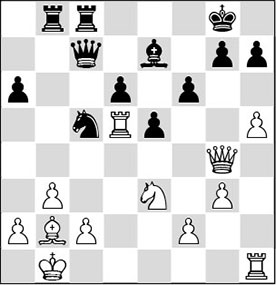
27.♗a3!
This move has a double intention. With 28.♗xc5, White threatens to force the notorious ending of good knight versus bad bishop, and at the same time he targets the weak d6-pawn.
27…♘b7
27…♘d7? runs into 28.♕e6+ ♔f8 29.♘f5 ♕xc2+ 30.♔a1, and White wins. After the text move you might ask what is worse: the good knight versus bad bishop ending, or putting the knight on this horrible square?
28.♖hd1
28.c4 is also a thematic move. White fixes the weakness of the d5-square permanently, and prepares to further exploit the weakness of d6 (and the light squares).
28…♗f8
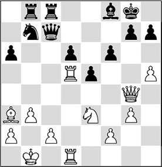
29.♖1d2!?
A great little move. The only weak point in White’s own position is c2, which he now gives extra protection, and at the same time Spassky vacates the d1-square for his queen, in order to maximize the pressure on d6.
29…♔h8 30.♘c4
Also worthy of consideration was 30.♘f5 ♖d8 31.f4.
30…♖d8 31.♕d1 ♖bc8
Black does not resign himself to his fate. The pawn on d6 could no longer be protected, and he is hoping for counterplay along the c-file.
32.♘xd6
As the saying goes: you reap what you sow. White has built up optimally and he now garners the first harvest of his superior strategy.
32…♘xd6 33.♗xd6 ♗xd6 34.♖xd6 ♖xd6 35.♖xd6
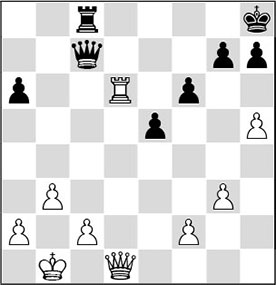
35…h6
Black is forced to give up a second pawn, since after 35…a5 36.♖d7 ♕b6 37.h6! g6 (37…♖g8 is strongly met by 38.♕d5, after which there is no defence against 39.hxg7+ ♖xg7 40.♖d8+ and mate) 38.♕d5 ♖f8 (the threat was 39.♕f7) 39.♖f7! ♖d8 40.♕d7!, Black is definitively crushed due to the weakness of the seventh and eighth ranks.
36.♖xa6
To all intents and purposes Black could have quietly resigned here, but it is instructive to watch how Spassky hauls in the loot.
36…♖d8 37.♕f3 ♖c8 38.♕d3 ♖d8 39.♕e4 f5 40.♕xf5 ♕c3 41.♖xh6+ gxh6 42.♕f6+ ♔h7 43.♕e7+
1-0
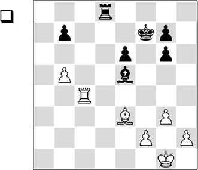
In the middlegame, White has managed to shatter the black pawn formation. These weaknesses are felt most strongly in the endgame, which is why Giri has simplified into this position.
For the moment, it is not easy to make progress. The black bishop controls the invasion square of the white rook, and the black king is protecting all the weaknesses. Giri proceeds here according to the famous ‘don’t hurry’ principle. First, he has to bring his own king into the game.
30.♔g2 ♖d5 31.b6
You could call this a minor success for Black, since a white pawn has been fixed on a square of an unfavourable colour. However, in this case we will see that a pawn that has advanced so far can become a significant factor anyway.
31…♔e7 32.h4
White increases his space advantage on the kingside.
32…♗d6 33.♖g4 ♔f7 34.♖a4
White wants to use his active rook, trying to invade the black position with it. The first threat is 35.♖a7.
34…♗e5 35.♔f3 ♔e7 36.♖a7 ♖d7 37.♔e4 ♔d6 38.♖a8 ♗f6
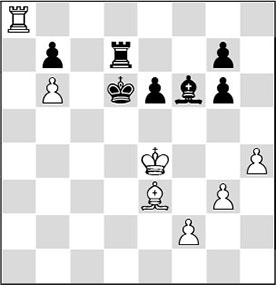
Black is still saddled with a vulnerable pawn structure, and rather passively placed pieces. White can boast a healthy formation and much more active pieces. And yet, it is still hard to make progress. For the time being, Black has protected everything, and it is not easy for White to enter the black position with his pieces. Something special needs to be found – and Giri finds it!
39.g4!
Putting the question to Black’s bishop, which is ideally placed on f6.
39…♖d8
Black wants to confront the invaded white rook. The exchange of rooks would only favour Black. The pawn on b6 could become an easy target in that case. Of course, the question is why White puts a beautiful pawn on offer. The answer is that after 39…♗xh4, he plays 40.g5, and now Black has to be very careful not to lose his bishop: 41.♖h8 is threatened, winning a piece. But, more important, the bishop has been cut off from the battle scene (its own ranks!). There could follow: 40…♖f7 41.♖d8+ ♔c6 42.♖c8+ ♔b5 (not 42…♔d7?, in view of 43.♖c7+ ♔e8 44.♖xf7 ♔xf7 45.♔f4, and Black’s bishop gets bagged) 43.♖c7 ♖f5 44.f4!, and all Black’s pawns are destined to be lost.
40.♖a7 ♔c6 41.♖a2 ♖h8
41…♗xh4 would even be losing now: 42.♖c2+ ♔b5 43.♖c7 ♔a6 44.g5! ♖g8 45.♖e7, and White wins easily.
42.♖c2+ ♔b5
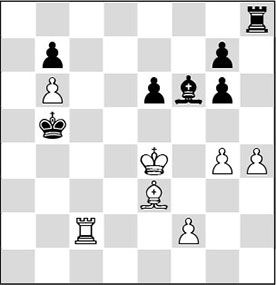
43.g5!
Giri has total control. He can even allow a pawn to be taken with check.
43…♖xh4+ 44.f4 ♗d8
The bishop has to retreat to this bad square. More important, it has been driven off the long diagonal, where it fulfilled such an important function. Apart from the fact that it defended g7, the white king could never enter via e5 either.
44…♗xg5? was not good in view of 45.♖c5+.
The alternative 44…♗a1? would cost a piece after 45.♖c1 ♗b2 46.♖b1 ♖h2 47.♗d4.
45.♖c5+!
Another strong zwischenzug.
45…♔b4
45…♔a6 46.♖e5 more or less amounts to the same, only here the black king is even worse placed.
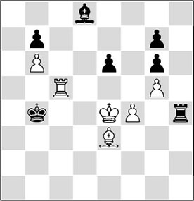
46.♖e5?!
Obviously, this was the concept Giri had in mind. Soon, the rook will eat up the weak pawns on e6 and g6. But he could have drastically speeded up the winning process by the beautiful 46.♖c7!. Perhaps Giri briefly looked at the move and rejected it. 46…♗xg5 (it is essential that 46…♗xc7 does not work, on account of 47.bxc7 ♖h8 48.♔e5 ♔b5 49.♔d6, and White’s passed pawn will cost Black a rook) 47.♖xb7 (the first weak pawn disappears from the board, after which the passed b-pawn is especially strong) 47…♗xf4 (47…♗f6 48.♖f7 ♖h5 49.b7 ♖b5 50.♗a7, and the pawn will cost Black a full rook. A funny try is 47…e5, but it fails miserably to 48.♖f7!, followed by b6-b7 and, if necessary, ♗a7) 48.♗xf4 g5 49.♖f7 gxf4 50.♖f8!, after which the promotion of White’s b-pawn can no longer be prevented.
46…♔c4 47.♔f3
Preparing 48.♖xe6 without being disturbed by 48…♗xg5.
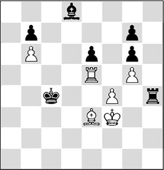
47…♗e7?!
After this logical move, White gets almost free passage. Black could have made the job hard for White by 47…♖h3+ 48.♔g4 (48.♔e4 leads to nothing after 48…♖h4) 48…♖xe3! 49.♖xe3 ♗xb6 50.♖xe6 ♗d4. In this position, the rook isn’t much stronger than the tremendous bishop on d4. In addition, Black has a particularly dangerous passed pawn. 51.♔f3 (here is an example of how this endgame can peter out to a draw: 51.♖xg6 b5 52.f5 b4 53.f6 gxf6 54.gxf6 ♗xf6 55.♖xf6 b3, and the white king is too far away)
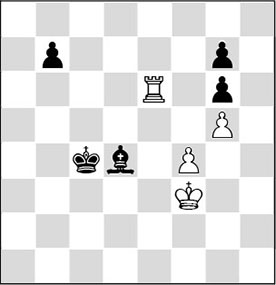
Analysis diagram
51…b5 52.♔e2 b4 53.♖c6+, and even though White keeps winning chances, it is very hard to convert this advantage.
48.♖xe6 ♗a3
Le Quang does everything he can to get the bishop back on the long diagonal, but his position can no longer be held.
49.♖xg6 ♔d5
Thus, Black loses g7, and White gets two very strong passed pawns. Here, 49…♗b2 also didn’t help, due to 50.♖d6 followed by ♖d7. Winning the other vulnerable pawn on b7 is at least equally important. An illustrative line is 50…♖h8 51.♖d7 ♖b8 52.f5, with the idea that 52…♗e5 runs into the same move: 53.♗f4 ♗xf4 54.♔xf4, and Black is doomed.
50.♗f2?!
Giving himself overtime work. Why did he reject the perfectly logical 50.♖xg7!, after which the win would be a matter of time? Perhaps, he foresaw technical problems after 50…♖h3+ 51.♔e2 ♔e4. Granted, White’s king and bishop are pushed back a long way, but after 52.♗d2 there is no way for Black to stop the strong pawns. For example: 52…♖h2+ 53.♔d1 ♗d6 54.♖d7 ♗xf4 55.♗xf4 ♔xf4 56.g6 ♖g2 57.g7, followed by 58.♖xb7.
50…♖h7
This is very passive, but at least the pawn on g7 is protected for now.
51.f5 ♗d6
51…♔e5 52.♔g4 didn’t help either, of course.
52.♔g4 ♗e5
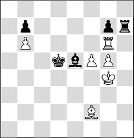
Superficially, it looks as if Black has everything nicely under control. He has only one pawn less, and White doesn’t seem to be able to make real progress any time soon.
53.♗g3!
Again, well spotted by Giri. He would very much like to exchange the bishops, as his rook is superior to its black counterpart.
53…♗d4
53…♗xg3 54.♔xg3 is immediately decisive after 54…♔e5 55.♔g4 ♔d5 56.♖e6 ♖h8 57.♖e7.
54.♖d6+
Bringing the rook back into the game with tempo.
54…♔e4
On 54…♔c5, 55.♖e6! is the best move. White wants to trade the bishops, as the rook ending is an easy win.
55.♖d7 ♗xb6
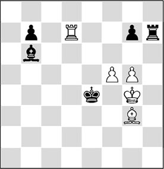
Giri has lost his one crown pawn, but others are taking its place.
56.g6 ♖h1 57.♖xg7
Finally, he has managed to round up this weak pawn. The remaining connected passed pawns secure the victory.
57…♖g1 58.♖e7+ ♔d3 59.♖xb7 ♗f2 60.♖b3+
Black resigned. Indeed, it is all over.
Exercises
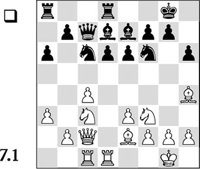
How does White force a weakening of the black pawn structure? And what are the consequences?
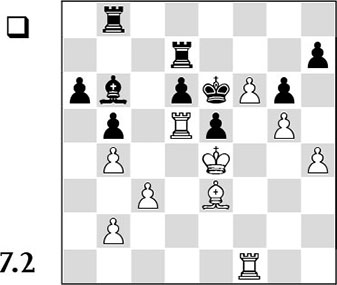
Throughout the game, Black has suffered on account of his backward pawn on d6. The pressure is clearly tangible, but the question is: how can White make progress? The white player found a nice solution to this problem. What was it?
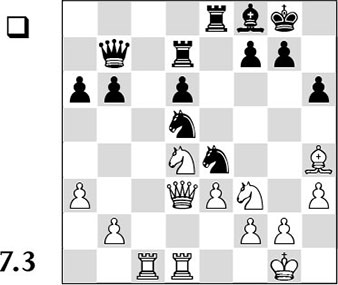
Black hopes to compensate for his weak pawn on d6 with active piece play. As soon as he can carry through …d6-d5, his disadvantage will be barely visible. With which strategic manoeuvre did White reduce Black’s piece play to practically zero? Can you also see how White can fix the d6-pawn ‘in passing’? Choose from:
A) 1.♘e2
B) 1.♖c6
C) 1.♘c6
D) 1.b4.
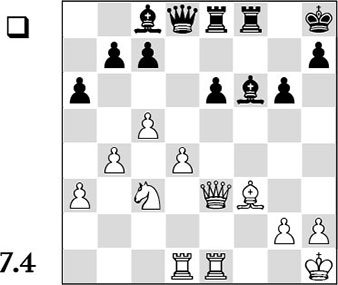
Black is stuck with an ‘ugly duckling’ on e6, of which he hopes to free himself by a future …e6-e5. With which manoeuvre does White render this push illusory?